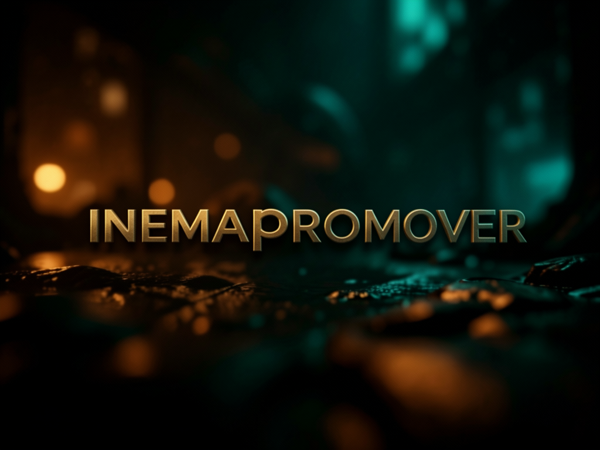

Texto → avatar HeyGen → reel vertical com capa de impacto → canal do YouTube certo. Um pipeline de 4 fases, cada uma com sua skill, rodando sobre Claude Code.

Um assunto entra de um lado; do outro saem reels verticais prontos, um por público, cada um com gancho e tom próprios — e a publicação no canal certo é automática.
Cada assunto gera 3 versões de roteiro por público (pessoa comum, jovens, profissionais, mulheres, empreendedores, técnicos, 40+, 60+, educadores, criadores, recolocação) — cada um com seu próprio gatilho e promessa.
O roteiro vira fala de avatar no HeyGen (Nei Maldaner / INEMA TIME), sempre pelo navegador, sem gastar créditos de API à toa.
Cada avatar é empilhado num reel 9:16 com capa de impacto e enfileirado direto no canal YouTube do público correspondente — a publicação acontece sozinha.
Cada fase do pipeline é uma skill do Claude Code, disparada em sequência a partir de um único assunto.
Assunto → 3 versões de roteiro falado (~35-40s) por público, com seções FALA e SOBREPOSIÇÕES.
FALA → vídeo de avatar no HeyGen, sempre via navegador (Avatar III, ilimitado). Título padronizado, 16:9 1080p.
Baixa os renders (via API quando possível, sem custo) para a pasta de output do assunto.
Enfileira cada avatar no bot de edição (mkivideos) em modo "capa impacto", no lives do público certo.
O pipeline do canal do público publica o reel no YouTube e avisa no Telegram.
O avatar e o reel não moram neste repositório — só textos/estado ficam aqui. Os binários vivem nos projetos que renderizam.
# avatar (fase 2) — nuvem HeyGen "Meus Projetos" # ↓ fase 2.5 (download automático) inemapromover/output/<assunto>/avatares/<titulo>.mp4 # reel (fase 3) — renderizado pelo mkivideos ~/projetos/mkivideos/renders/mkivideo-<jobId>-16.mp4 # ↓ watcher do inemaccvbot copia pro destino ~/projetos/yt-pub-lives<N>/imports/videos/mkivideo-<jobId>-16.mp4 # ↓ pipeline yt-pub-livesN publica (fase 4, automática)
⚠️ O mkivideos só sobe via systemctl --user restart mkivideos.service — nunca nohup/node dist/cli.js cru. Sem o env var MKIVIDEOS_RENDER_DIR (absoluto) do systemd, o caminho gravado no job fica relativo e a cópia pro canal falha com ENOENT mesmo com o vídeo intacto — incidente real de 2026-07-19, documentado nos READMEs de mkivideos e inemaccvbot.
O inemapromover não roda sozinho: ele é a cola entre serviços que já precisam existir no ambiente do operador.
Executa cada fase como skill, a partir de um pedido em texto — não há comandos de shell separados por fase.
Extensão que dá ao Claude Code controle do navegador logado no HeyGen (fases 2 e 2.5).
Gera o vídeo de avatar falando o roteiro da fase 1 — app.heygen.com, sessão logada.
Bot de Telegram — o comando /promoclub orquestra o pipeline inteiro: fase 1 → fase 2 automática → watcher → fase 3.
Daemon/fila que efetivamente monta e renderiza os reels — dashboard nas portas :3142/:3143.
Motor de composição usado pelo mkivideos no modo "capa de impacto" (topo/meio/base + legenda + CTA).
Um pipeline por público (N = 21 a 31) que publica o reel pronto no canal YouTube correspondente.
Chave da API usada só na fase 2.5 (download sem custo) — fica fora deste repo, lida via HEYGEN_ENV_PATH.
Foca a janela do Chromium sozinho antes da fase 2 — sem isso a aba do HeyGen fica hidden e trava.
Este repositório não precisa de npm install nem build — é composto de skills (markdown) + um script Node standalone. O que precisa estar pronto é o ambiente ao redor.
Em Linux/ARM64 com Chromium via snap, a extensão só é reconhecida iniciando com a flag --chrome.
# obrigatório nesta configuração claude --chrome
Logada no navegador da extensão, com avatar "Nei Maldaner", voz "INEMA TIME" e motor Avatar III (o único ilimitado na assinatura).
Confirmar que os workers do mkivideos estão de pé e a fila responde antes de enfileirar.
# conferir workers pgrep -af 'dist/cli.js run' # ping na fila curl -s localhost:3142/api/stats
Uma pasta yt-pub-livesN por público (N = 21..31). Se faltar, a fase 3 cria o mínimo pra não travar o job — a configuração do canal (credenciais YouTube) é do operador.
# mínimo se a pasta ainda não existir mkdir -p ~/projetos/yt-pub-lives21/imports/videos
Usada só na fase 2.5 (download sem custo), lida de um .env externo — nunca deste repo.
# antes de rodar a fase 2.5 export HEYGEN_ENV_PATH=~/.config/heygen/.env node scripts/list-videos.mjs --title "<assunto>"
As 4 fases rodam em sequência, cada uma pedida ao Claude Code como uma skill.
Dá o assunto e pede os roteiros. Sai em textos/<assunto>/<publico>.md, um arquivo por público, 3 versões cada.
/inemaclub-textos "assunto da campanha" # gera textos/<slug>/*.md
Pega a seção FALA de cada roteiro e gera o vídeo do avatar, sempre pelo navegador (créditos de API só com pedido explícito), com o look do público. Via /promoclub do bot, dispara sozinha assim que a fase 1 termina.
Use a skill heygen-avatar-nei-III para o assunto "<slug>" # gera 1 vídeo por público, ou automático via /promoclub
Traz os vídeos prontos do HeyGen para output/<assunto>/avatares/.
Use a skill heygen-download-nei para o assunto "<slug>"
Cada avatar vira um reel 9:16 empilhado (capa de impacto + avatar + explicativo) e entra na fila do lives do público certo.
Use a skill inemaclub-reel para o assunto "<slug>" # enfileira no mkivideos
Nada a fazer aqui: o pipeline yt-pub-livesN de cada público publica o reel no YouTube e o bot avisa no Telegram quando terminar.
# acompanhar o status de um job específico node dist/cli.js status <id>
Lições registradas em produção — para não repetir o mesmo tropeço.
Sem claude --chrome a extensão não conecta. Abas "invisíveis" ou screenshots em branco geralmente são outro navegador pareado — use list_connected_browsers + select_browser.
Chromium via snap só lê ~/snap/chromium/common/chromium/NativeMessagingHosts/ — se a extensão nunca conectar, copiar o manifesto do Claude Code pra lá.
Já abriu com avatar "Annie" / motor Avatar IV (Premium!) em vez do padrão do estúdio. Sempre trocar para o look do público / INEMA TIME / Avatar III antes de gerar.
A fase 2 exige a janela do Chromium visível (tiptap do HeyGen não sincroniza numa aba hidden) — o bot resolve sozinho com wmctrl -a Chromium antes de cada render.
Fechar o cliente RDP sem logout não mata o Xorg/Chromium — a sessão fica só "desconectada", em pé.
O subagente já reportou sucesso sem ter gerado nada (falso positivo visto em produção) — por isso a fase 2 sempre confere na API do HeyGen antes de declarar "concluído".
A fase 2 nunca gera as 3 versões de um público de uma vez sem pedido explícito, e nunca usa a rota API por padrão — só a rota navegador, sem custo extra na assinatura.
Se o daemon do mkivideos estiver fora do ar, a fase 3 avisa e não enfileira — em vez de falhar em silêncio.
A fase 3 cria o mínimo (imports/videos/) pra não travar o job, mas isso não configura o canal — a configuração real é responsabilidade do operador.
Fases validadas ponta a ponta em produção e pendências conhecidas.